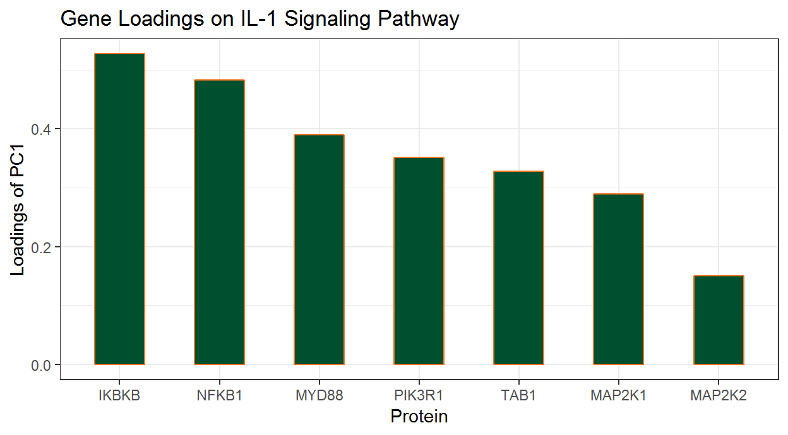
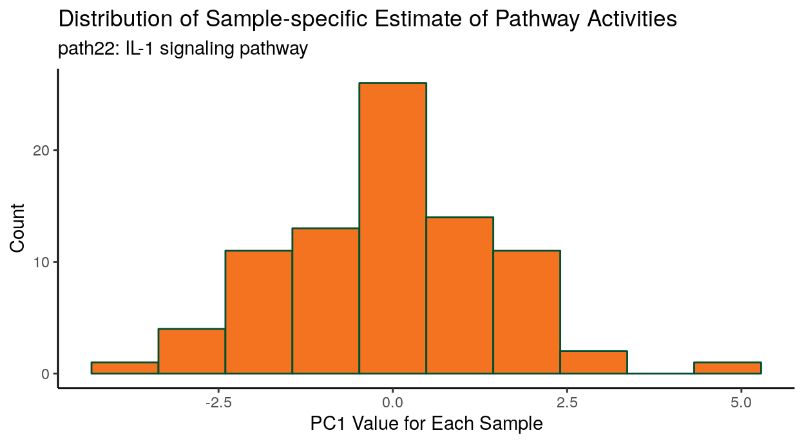
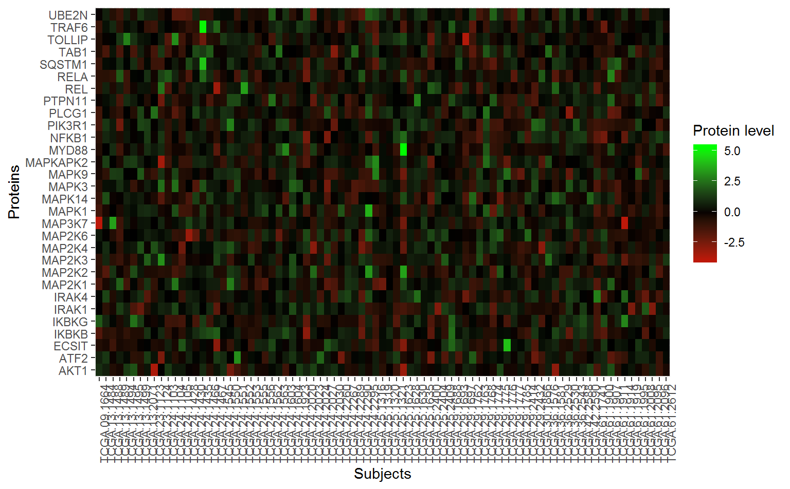
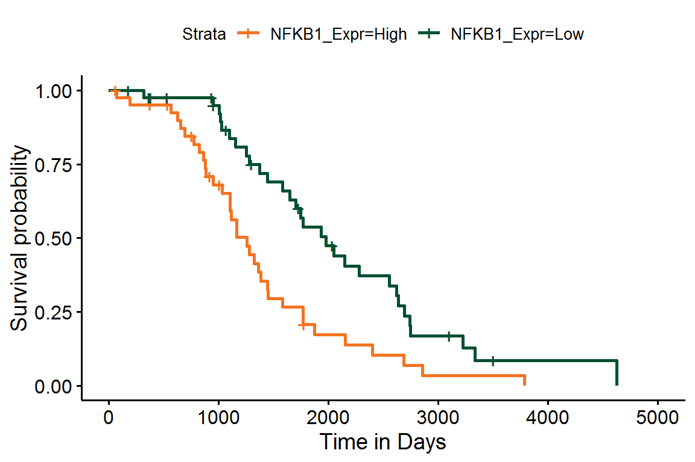
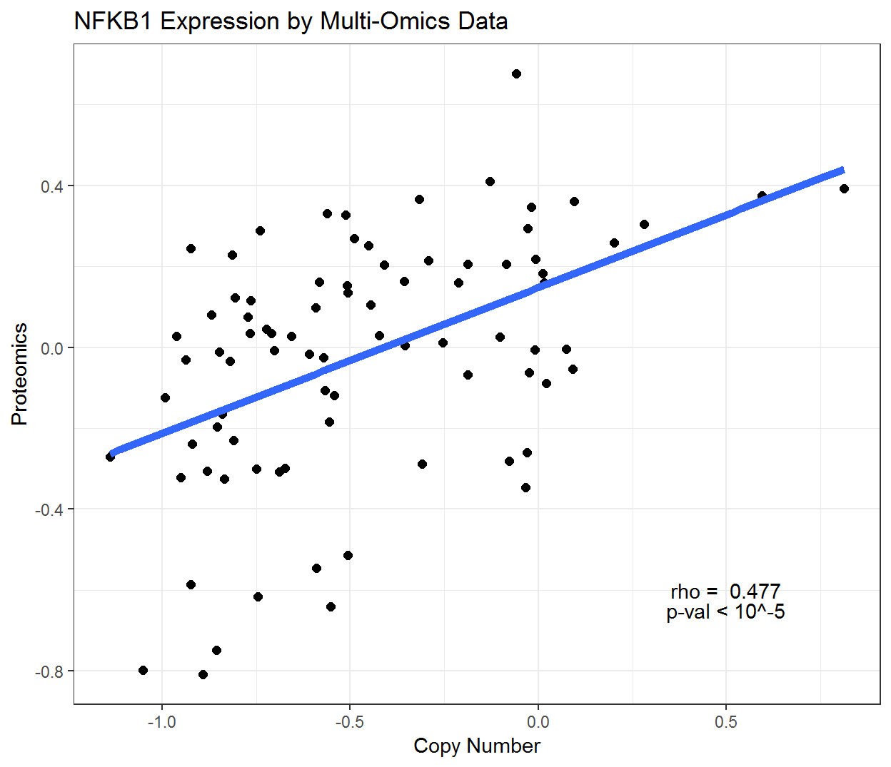
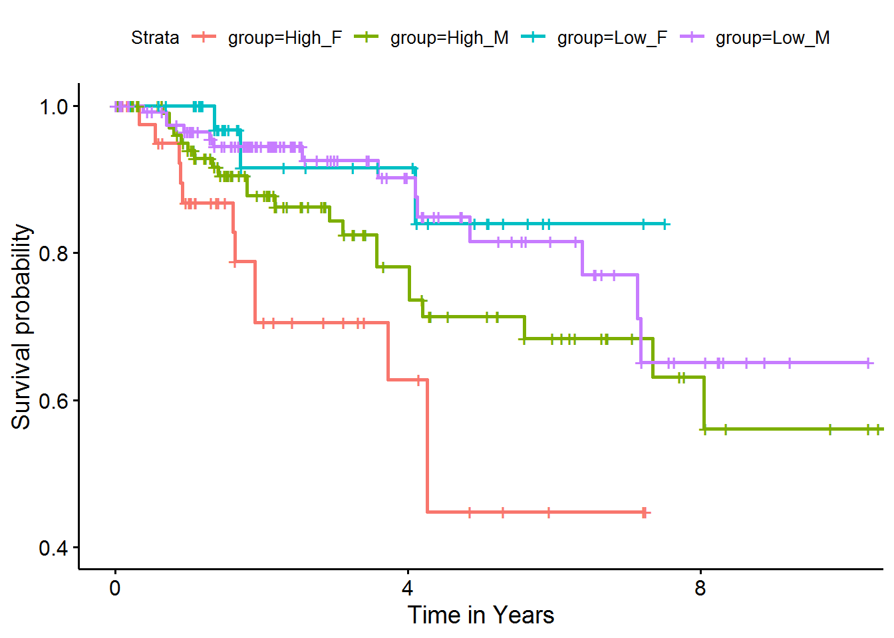

Integrative Pathway Analysis with pathwayPCA
Gabriel Odom, Lily Wang, Xi Chen
2020-02-26
Introduction_to_pathwayPCA.Rmd1. Introduction
pathwayPCA is an integrative analysis tool that implements the principal component analysis (PCA) based pathway analysis approaches described in Chen et al. (2008), Chen et al. (2010), and Chen (2011). pathwayPCA allows users to:
- Test pathway association with binary, continuous, or survival phenotypes.
- Extract relevant genes in the pathways using the SuperPCA and AESPCA approaches.
- Compute principal components (PCs) based on the selected genes. These estimated latent variables represent pathway activities for individual subjects, which can then be used to perform integrative pathway analysis, such as multi-omics analysis.
- Extract relevant genes that drive pathway significance as well as data corresponding to these relevant genes for additional in-depth analysis.
- Perform analyses with enhanced computational efficiency with parallel computing and enhanced data safety with S4-class data objects.
- Analyze studies with complex experimental designs, with multiple covariates, and with interaction effects, e.g., testing whether pathway association with clinical phenotype is different between male and female subjects.
Installing the Package
pathwayPCA is a package for R, so you need R first. We also strongly recommend the RStudio integrated development environment as a user-friendly graphical wrapper for R.
Stable Build
The stable build of our package will be available on Bioconductor in May of 2019. To access Bioconductor packages, first install BiocManager, then use BiocManager to install this package:
install.packages("BiocManager")
BiocManager::install("pathwayPCA")Development Build
Because we are currently in the development phase for version 2 of this package, you can install the package from GitHub. In order to install a package from GitHub, you will need the devtools:: package (https://github.com/r-lib/devtools) and either Rtools (for Windows) or Xcode (for Mac). Then you can install the development version of the pathwayPCA package from GitHub:
devtools::install_github("gabrielodom/pathwayPCA")Loading Packages
Throughout this vignette, we will make use of the tidyverse suite of utility packages (https://www.tidyverse.org/). The tidyverse and pathwayPCA can be loaded into R using:
2. Case study: identifying significant pathways in protein expressions associated with survival outcome in ovarian cancer data
2.1. Ovarian cancer dataset
For this example, we will use the mass spectrometry based global proteomics data for ovarian cancer recently generated by the Clinical Proteomic Tumor Analysis Consortium (CPTAC). The normalized protein abundance expression dataset can be obtained from the LinkedOmics database at http://linkedomics.org/data_download/TCGA-OV/. We used the dataset “Proteome (PNNL, Gene level)” which was generated by the Pacific Northwest National Laboratory (PNNL). One subject was removed due to missing survival outcome. Missing values in proteins expression data were imputed using the Bioconductor package impute under default settings. The final dataset consisted of 5162 protein expression values for 83 samples.
2.2. Creating an Omics data object for pathway analysis
First, we need to create an Omics-class data object that stores
- the expression dataset
- phenotype information for the samples
- a collection of pathways
2.2.1 Expression and Phenotype Data
We can obtain datasets 1 and 2 for the ovarian cancer dataset by loading the ovarian_PNNL_survival.RDS data file included in the pathwayPCAdata supplement repository: https://github.com/lizhongliu1996/pathwayPCAdata.
gitHubPath_char <- "https://raw.githubusercontent.com/lizhongliu1996/pathwayPCAdata/master/"
ovSurv_df <- readRDS(
url(paste0(gitHubPath_char, "ovarian_PNNL_survival.RDS"))
)The ovSurv_df dataset is a data frame with protein expression levels and survival outcome matched by sample IDs. The variables (columns) include overall survival time and censoring status, as well as expression data for 5162 proteins for each of the 83 samples.
ovSurv_df [1:5, 1:5]
#> # A tibble: 5 x 5
#> Sample OS_time OS_death A1BG A2M
#> <chr> <int> <int> <dbl> <dbl>
#> 1 TCGA.09.1664 2279 1 0.336 -0.00505
#> 2 TCGA.13.1484 3785 1 -0.848 -0.434
#> 3 TCGA.13.1488 2154 1 -0.0730 0.172
#> 4 TCGA.13.1489 2553 1 0.0154 -0.419
#> 5 TCGA.13.1494 2856 1 -0.495 0.1122.2.2 Pathway Collections
For the collection of pathways in (3), we need to specify a .gmt file, a text file with each row corresponding to one pathway. Each row contains an ID (column TERMS), an optional description (column description), and the genes in the pathway (all subsequent columns). Pathway collections in .gmt form can be downloaded from the MSigDB database at http://software.broadinstitute.org/gsea/msigdb/collections.jsp.
For WikiPathways, one can download monthly data releases in .gmt format using the dowloadPathwayArchive() function in the rWikiPathways package from Bioconductor. For example, the following commands downloads the latest release of the human pathways from WikiPathways to your current directory:
library(rWikiPathways)
# library(XML) # necessary if you encounter an error with readHTMLTable
downloadPathwayArchive(
organism = "Homo sapiens", format = "gmt"
) trying URL 'http://data.wikipathways.org/current/gmt/wikipathways-20190110-gmt-Homo_sapiens.gmt'
Content type '' length 174868 bytes (170 KB)
downloaded 170 KB#> [1] "wikipathways-20190110-gmt-Homo_sapiens.gmt"pathwayPCA includes the June 2018 Wikipathways collection for homo sapiens, which can be loaded using the read_gmt function:
2.2.3 Create an OmicsSurv Data Container
Now that we have these three data components, we create an OmicsSurv data container. Note that when assayData_df and response are supplied from two different files, the user must match and merge these data sets by sample IDs.
ov_OmicsSurv <- CreateOmics(
# protein expression data
assayData_df = ovSurv_df[, -(2:3)],
# pathway collection
pathwayCollection_ls = wikipathways_PC,
# survival phenotypes
response = ovSurv_df[, 1:3],
# phenotype is survival data
respType = "survival",
# retain pathways with > 5 proteins
minPathSize = 5
)
====== Creating object of class OmicsSurv =======
The input pathway database included 5831 unique features.
The input assay dataset included 5162 features.
Only pathways with at least 5 or more features included in the assay dataset are
tested (specified by minPathSize parameter). There are 324 pathways which meet
this criterion.
Because pathwayPCA is a self-contained test (PMID: 17303618), only features in
both assay data and pathway database are considered for analysis. There are 2064
such features shared by the input assay and pathway database.To see a summary of the Omics data object we just created, simply type the name of the object:
ov_OmicsSurv
#> Formal class 'OmicsSurv' [package "pathwayPCA"] with 6 slots
#> ..@ eventTime : num [1:83] 2279 3785 2154 2553 2856 ...
#> ..@ eventObserved : logi [1:83] TRUE TRUE TRUE TRUE TRUE TRUE ...
#> ..@ assayData_df :Classes 'tbl_df', 'tbl' and 'data.frame': 83 obs. of 5162 variables:
#> ..@ sampleIDs_char : chr [1:83] "TCGA.09.1664" "TCGA.13.1484" "TCGA.13.1488" "TCGA.13.1489" ...
#> ..@ pathwayCollection :List of 4
#> .. ..- attr(*, "class")= chr [1:2] "pathwayCollection" "list"
#> ..@ trimPathwayCollection:List of 5
#> .. ..- attr(*, "class")= chr [1:2] "pathwayCollection" "list"2.3. Testing pathway association with phenotypes
2.3.1 Method Description
Once we have a valid Omics object, we can perform pathway analysis using the AES-PCA (Adaptive, Elastic-net, Sparse PCA) or Supervised PCA (SuperPCA) methodology described in Chen et al. (2008), Chen et al. (2010), and Chen (2011).
Briefly, in the AES-PCA method, we first extract PCs representing activities within each pathway using a dimension reduction approach based on adaptive, elastic-net, sparse principal component analysis (https://doi.org/10.2202/1544-6115.1697). The estimated latent variables are then tested against phenotypes using a permutation test that permutes sample labels. Note that the AESPCA approach does not use the response information to estimate pathway PCs, so it is an unsupervised approach.
This is in contrast to the SuperPCA approach, where a selected subset of genes most associated with disease outcome are used to estimate the latent variable for a pathway (https://doi.org/10.1002/gepi.20532). Because of this gene selection step, the test statistics from the SuperPCA model can no longer be approximated well using the Student’s \(t\)-distribution. To account for the gene selection step, pathwayPCA estimates \(p\)-values from a two-component mixture of Gumbel extreme value distributions instead.
2.3.2 Implementation
Because the syntax for performing SuperPCA is nearly identical to the AES-PCA syntax, we will illustrate only the AES-PCA workflow below.
Note that when the value supplied to the numReps argument is greater than 0, the AESPCA_pvals() function employs a parametric test when estimating pathway significance via the following model: “phenotype ~ intercept + PC1”. Pathway \(p\)-values are estimated based on a likelihood ratio test that compares this model to a null model (with intercept only).
ovarian_aespcOut <- AESPCA_pVals(
# The Omics data container
object = ov_OmicsSurv,
# One principal component per pathway
numPCs = 1,
# Use parallel computing with 2 cores
parallel = TRUE,
numCores = 2,
# # Use serial computing
# parallel = FALSE,
# Estimate the p-values parametrically
numReps = 0,
# Control FDR via Benjamini-Hochberg
adjustment = "BH"
)
Part 1: Calculate Pathway AES-PCs
Initializing Computing Cluster: DONE
Extracting Pathway PCs in Parallel: DONE
Part 2: Calculate Pathway p-Values
Initializing Computing Cluster: DONE
Extracting Pathway p-Values in Parallel: DONE
Part 3: Adjusting p-Values and Sorting Pathway p-Value Data Frame
DONEThis ovarian_aespcOut object contains 3 components: a table of pathway \(p\)-values, AESPCA-estimated PCs of each sample from each pathway, and the loadings of each protein onto the AESPCs.
2.3.3 The pathway analysis results
For this ovarian cancer dataset, the top 10 most significant pathways identified by AES-PCA are:
getPathpVals(ovarian_aespcOut, numPaths = 10)
#> # A tibble: 10 x 4
#> terms description rawp FDR_BH
#> <chr> <chr> <dbl> <dbl>
#> 1 WP195 IL-1 signaling pathway 0.00247 0.279
#> 2 WP3858 Toll-like Receptor Signaling 0.00463 0.279
#> 3 WP363 Wnt Signaling Pathway 0.00485 0.279
#> 4 WP2447 Amyotrophic lateral sclerosis (ALS) 0.00582 0.279
#> 5 WP2036 TNF related weak inducer of apoptosis (TWEAK) Signalin… 0.00641 0.279
#> 6 WP3298 Melatonin metabolism and effects 0.00688 0.279
#> 7 WP3850 Factors and pathways affecting insulin-like growth fac… 0.00700 0.279
#> 8 WP3617 Photodynamic therapy-induced NF-kB survival signaling 0.00714 0.279
#> 9 WP34 Ovarian Infertility Genes 0.00801 0.279
#> 10 WP3851 TLR4 Signaling and Tolerance 0.00870 0.279Before constructing a graph of the \(p\)-values, we extract the top 20 pathways (the default value for numPaths is 20):
Now we plot the pathway significance level for the top 20 pathways. In this figure, score indicates the negative natural logarithm of the unadjusted \(p\)-values for each pathway.
ggplot(ovOutGather_df) +
# set overall appearance of the plot
theme_bw() +
# Define the dependent and independent variables
aes(x = reorder(terms, score), y = score) +
# From the defined variables, create a vertical bar chart
geom_col(position = "dodge", fill = "#66FFFF", width = 0.7) +
# Add pathway labels
geom_text(
aes(x = reorder(terms, score), label = reorder(description, score), y = 0.1),
color = "black",
size = 2,
hjust = 0
) +
# Set main and axis titles
ggtitle("AES-PCA Significant Pathways: Ovarian Cancer") +
xlab("Pathways") +
ylab("Negative LN (p-Value)") +
# Add a line showing the alpha = 0.01 level
geom_hline(yintercept = -log(0.01), size = 1, color = "blue") +
# Flip the x and y axes
coord_flip()
2.3.4 Extract relevant genes from significant pathways
Because pathways are defined a priori, typically only a subset of genes within each pathway are relevant to the phenotype and contribute to pathway significance. In AESPCA, these relevant genes are the genes with nonzero loadings in the first PC of AESPCs.
For example, for the “IL-1 signaling pathway” (Wikipathways WP195), we can extract the PCs and their protein Loadings using the getPathPCLs() function:
wp195PCLs_ls <- getPathPCLs(ovarian_aespcOut, "WP195")
wp195PCLs_ls
#> $PCs
#> # A tibble: 83 x 2
#> sampleID V1
#> <chr> <dbl>
#> 1 TCGA.09.1664 -2.66
#> 2 TCGA.13.1484 -0.459
#> 3 TCGA.13.1488 0.603
#> 4 TCGA.13.1489 -1.70
#> 5 TCGA.13.1494 -0.726
#> 6 TCGA.13.1495 -0.316
#> 7 TCGA.13.1499 0.252
#> 8 TCGA.23.1123 -0.679
#> 9 TCGA.23.1124 1.83
#> 10 TCGA.24.1103 -1.93
#> # … with 73 more rows
#>
#> $Loadings
#> # A tibble: 30 x 2
#> featureID PC1
#> <chr> <dbl>
#> 1 ATF2 0
#> 2 MAPK14 0
#> 3 AKT1 0
#> 4 IKBKB 0.527
#> 5 NFKB1 0.483
#> 6 PIK3R1 0.352
#> 7 PLCG1 0
#> 8 MAPK1 0
#> 9 MAPK9 0
#> 10 MAP2K1 0.289
#> # … with 20 more rows
#>
#> $pathway
#> [1] "path22"
#>
#> $term
#> [1] "WP195"
#>
#> $description
#> [1] "IL-1 signaling pathway"The proteins with non-zero loadings can be extracted using the following lines:
wp195Loadings_df <-
wp195PCLs_ls$Loadings %>%
filter(PC1 != 0)
wp195Loadings_df
#> # A tibble: 7 x 2
#> featureID PC1
#> <chr> <dbl>
#> 1 IKBKB 0.527
#> 2 NFKB1 0.483
#> 3 PIK3R1 0.352
#> 4 MAP2K1 0.289
#> 5 MAP2K2 0.150
#> 6 TAB1 0.328
#> 7 MYD88 0.389We can also prepare these loadings for graphics:
wp195Loadings_df <-
wp195Loadings_df %>%
# Sort Loading from Strongest to Weakest
arrange(desc(abs(PC1))) %>%
# Order the Genes by Loading Strength
mutate(featureID = factor(featureID, levels = featureID)) %>%
# Add Directional Indicator (for Colour)
mutate(Direction = factor(ifelse(PC1 > 0, "Up", "Down"))) Now we will construct a column chart with ggplot2’s geom_col() function.
ggplot(data = wp195Loadings_df) +
# Set overall appearance
theme_bw() +
# Define the dependent and independent variables
aes(x = featureID, y = PC1, fill = Direction) +
# From the defined variables, create a vertical bar chart
geom_col(width = 0.5, fill = "#005030", color = "#f47321") +
# Set main and axis titles
labs(
title = "Gene Loadings on IL-1 Signaling Pathway",
x = "Protein",
y = "Loadings of PC1"
) +
# Remove the legend
guides(fill = FALSE)
Alternatively, we can also plot the correlation of each gene with first PC for each gene. These correlations can be computed by using the TidyCorrelation() function in Section 3.3 of additional vignette “Chapter 5 - Visualizing the Results”.
2.3.5 Subject-specific PCA estimates
In the study of complex diseases, there is often considerable heterogeneity among different subjects with regard to underlying causes of disease and benefit of particular treatment. Therefore, in addition to identifying disease-relevant pathways for the entire patient group, successful (personalized) treatment regimens will also depend upon knowing if a particular pathway is dysregulated for an individual patient.
To this end, we can also assess subject-specific pathway activity. As we saw earlier, the getPathPCLs() function also returns subject-specific estimates for the individual pathway PCs.
ggplot(data = wp195PCLs_ls$PCs) +
# Set overall appearance
theme_classic() +
# Define the independent variable
aes(x = V1) +
# Add the histogram layer
geom_histogram(bins = 10, color = "#005030", fill = "#f47321") +
# Set main and axis titles
labs(
title = "Distribution of Sample-specific Estimate of Pathway Activities",
subtitle = paste0(wp195PCLs_ls$pathway, ": ", wp195PCLs_ls$description),
x = "PC1 Value for Each Sample",
y = "Count"
)
This graph shows there can be considerable heterogeneity in pathway activities between the patients.
2.3.6 Extract analysis dataset for significant pathways
Users are often also interested in examining the actual data used for analysis of the top pathways, especially for the relevant genes with the pathway. To extract this dataset, we can use the SubsetPathwayData() function. These commands extract data for the most significant pathway (IL-1 signaling):
wp195Data_df <- SubsetPathwayData(ov_OmicsSurv, "WP195")
wp195Data_df
#> # A tibble: 83 x 33
#> sampleID EventTime EventObs ATF2 MAPK14 AKT1 IKBKB NFKB1 PIK3R1
#> <chr> <dbl> <lgl> <dbl> <dbl> <dbl> <dbl> <dbl> <dbl>
#> 1 TCGA.09… 2279 TRUE 0.623 -0.995 0.958 -1.71 -0.730 -1.36
#> 2 TCGA.13… 3785 TRUE 1.17 1.71 0.575 -0.751 0.783 1.17
#> 3 TCGA.13… 2154 TRUE -0.130 -0.127 -0.542 -0.915 0.418 0.430
#> 4 TCGA.13… 2553 TRUE 0.482 -0.0588 -0.292 -0.422 -0.488 -2.37
#> 5 TCGA.13… 2856 TRUE 0.130 0.610 1.25 -0.950 0.393 0.301
#> 6 TCGA.13… 2749 TRUE -0.823 0.266 1.79 -0.522 -0.0498 -0.0579
#> 7 TCGA.13… 3500 FALSE -0.704 0.516 -0.519 -0.494 0.104 1.53
#> 8 TCGA.23… 1018 TRUE 0.270 -0.419 -3.63 0.0331 -0.114 -0.0421
#> 9 TCGA.23… 1768 TRUE -2.61 -1.81 -0.0214 0.811 1.17 0.559
#> 10 TCGA.24… 1646 TRUE 0.270 -0.622 1.23 -0.924 -0.954 -0.912
#> # … with 73 more rows, and 24 more variables: PLCG1 <dbl>, MAPK1 <dbl>,
#> # MAPK9 <dbl>, MAP2K1 <dbl>, MAP2K2 <dbl>, MAP2K6 <dbl>, PTPN11 <dbl>,
#> # REL <dbl>, RELA <dbl>, MAP3K7 <dbl>, IKBKG <dbl>, TAB1 <dbl>, IRAK1 <dbl>,
#> # MYD88 <dbl>, IRAK4 <dbl>, ECSIT <dbl>, TOLLIP <dbl>, MAPK3 <dbl>,
#> # MAP2K3 <dbl>, MAP2K4 <dbl>, TRAF6 <dbl>, UBE2N <dbl>, SQSTM1 <dbl>,
#> # MAPKAPK2 <dbl>In order to plot a heatmap of the proteins in this pathway, we need to “gather” the data frame into three columns.
wp195gather_df <- wp195Data_df %>%
arrange(EventTime) %>%
select(-EventTime, -EventObs) %>%
gather(protein, value, -sampleID)Now for the heatmap:
ggplot(wp195gather_df, aes(x = protein, y = sampleID)) +
geom_tile(aes(fill = value)) +
scale_fill_gradient2(low = "red", mid = "black", high = "green") +
labs(x = "Proteins", y = "Subjects", fill = "Protein level") +
theme(axis.text.x = element_text(angle = 90)) +
coord_flip()
We can also perform analysis for individual genes belonging to the pathway:
library(survival)
NFKB1_df <-
wp195Data_df %>%
select(EventTime, EventObs, NFKB1)
wp195_mod <- coxph(
Surv(EventTime, EventObs) ~ NFKB1,
data = NFKB1_df
)
summary(wp195_mod)
#> Call:
#> coxph(formula = Surv(EventTime, EventObs) ~ NFKB1, data = NFKB1_df)
#>
#> n= 83, number of events= 64
#>
#> coef exp(coef) se(coef) z Pr(>|z|)
#> NFKB1 0.4606 1.5850 0.1521 3.028 0.00246 **
#> ---
#> Signif. codes: 0 '***' 0.001 '**' 0.01 '*' 0.05 '.' 0.1 ' ' 1
#>
#> exp(coef) exp(-coef) lower .95 upper .95
#> NFKB1 1.585 0.6309 1.176 2.136
#>
#> Concordance= 0.65 (se = 0.045 )
#> Likelihood ratio test= 10.7 on 1 df, p=0.001
#> Wald test = 9.17 on 1 df, p=0.002
#> Score (logrank) test = 9.49 on 1 df, p=0.002Additionally, we can estimate Kaplan-Meier survival curves for patients with high or low expression values for individual genes:
# Add the direction
NFKB1_df <-
NFKB1_df %>%
# Group subjects by gene expression
mutate(NFKB1_Expr = ifelse(NFKB1 > median(NFKB1), "High", "Low")) %>%
# Re-code time to years
mutate(EventTime = EventTime / 365.25) %>%
# Ignore any events past 10 years
filter(EventTime <= 10)
# Fit the survival model
NFKB1_fit <- survfit(
Surv(EventTime, EventObs) ~ NFKB1_Expr,
data = NFKB1_df
)Finally, we can plot these K-M curves over NFKB1 protein expression.
library(survminer)
ggsurvplot(
NFKB1_fit,
conf.int = FALSE, pval = TRUE,
xlab = "Time in Years",
palette = c("#f47321", "#005030"),
xlim = c(0, 10)
)
3. Case study: an integrative multi-omics pathway analysis of ovarian cancer data
While copy number alterations are common genomic aberrations in ovarian carcer, recent studies have shown these changes do not necessarily lead to concordant changes in protein expression. In Section 2.3 above, we illustrated testing pathway activities in protein expression against survival outcome. In this section, we will additionally test pathway activities in copy number against survival outcome. Moreover, we will perform integrative analysis to identify those survival -associated protein pathways, genes, and samples driven by copy number alterations.
3.1 Creating copy number Omics data object for pathway analysis
We can identify copy number (CNV) pathways significantly associated with survival in the same way as we did for protein expressions. This gene level CNV data was downloaded from UCSC Xena Functional Genomics Browser (http://xena.ucsc.edu/).
And now we create an Omics data container.
ovCNV_Surv <- CreateOmics(
assayData_df = copyNumberClean_df[, -(2:3)],
pathwayCollection_ls = wikipathways_PC,
response = copyNumberClean_df[, 1:3],
respType = "survival",
minPathSize = 5
) ====== Creating object of class OmicsSurv =======
The input pathway database included 5831 unique features.
The input assay dataset included 24776 features.
Only pathways with at least 5 or more features included in the assay dataset are
tested (specified by minPathSize parameter). There are 424 pathways which meet
this criterion.
Because pathwayPCA is a self-contained test (PMID: 17303618), only features in
both assay data and pathway database are considered for analysis. There are 5637
such features shared by the input assay and pathway database.Finally, we can apply the AESPCA method to this copy-number data container. Due to the large sample size, this will take a few moments.
ovCNV_aespcOut <- AESPCA_pVals(
object = ovCNV_Surv,
numPCs = 1,
parallel = TRUE,
numCores = 20,
numReps = 0,
adjustment = "BH"
)Part 1: Calculate Pathway AES-PCs
Initializing Computing Cluster: DONE
Extracting Pathway PCs in Parallel: DONE
Part 2: Calculate Pathway p-Values
Initializing Computing Cluster: DONE
Extracting Pathway p-Values in Parallel: DONE
Part 3: Adjusting p-Values and Sorting Pathway p-Value Data Frame
DONE3.2 Identifying significant pathways and relevant genes in both CNV and protein level
Next, we identify the intersection of significant pathways based on both CNV and protein data. First, we will create a data frame of the pathway \(p\)-values from both CNV and proteomics.
# Copy Number
CNVpvals_df <-
getPathpVals(ovCNV_aespcOut, alpha = 0.05) %>%
mutate(rawp_CNV = rawp) %>%
select(description, rawp_CNV)
# Proteomics
PROTpvals_df <-
getPathpVals(ovarian_aespcOut, alpha = 0.05) %>%
mutate(rawp_PROT = rawp) %>%
select(description, rawp_PROT)
# Intersection
SigBoth_df <- inner_join(PROTpvals_df, CNVpvals_df, by = "description")
# WnT Signaling Pathway is listed as WP363 and WP428The results showed there are 23 pathways significantly associated with survival in both CNV and protein data, which is significantly more than expected by chance (p-value = 0.02088; Fisher’s Exact Test; shown in multi_pathway_overlap_fishers.R). Here are the top-10 most significant pathways (sorted by protein data significance):
SigBoth_df
#> # A tibble: 23 x 3
#> description rawp_PROT rawp_CNV
#> <chr> <dbl> <dbl>
#> 1 IL-1 signaling pathway 0.00247 0.0222
#> 2 Wnt Signaling Pathway 0.00485 0.0486
#> 3 TNF related weak inducer of apoptosis (TWEAK) Signaling P… 0.00641 0.0226
#> 4 Factors and pathways affecting insulin-like growth factor… 0.00700 0.0366
#> 5 Thymic Stromal LymphoPoietin (TSLP) Signaling Pathway 0.0156 0.0181
#> 6 Fibrin Complement Receptor 3 Signaling Pathway 0.0160 0.000358
#> 7 Apoptosis Modulation by HSP70 0.0165 0.0311
#> 8 RANKL/RANK (Receptor activator of NFKB (ligand)) Signalin… 0.0170 0.000418
#> 9 TGF-beta Receptor Signaling 0.0205 0.0355
#> 10 Brain-Derived Neurotrophic Factor (BDNF) signaling pathway 0.0206 0.0113
#> # … with 13 more rowsSimilar to the protein pathway analysis shown in Section 2.3.4, we can also identify relevant genes with nonzero loadings that drives pathway significance in CNV. The “IL-1 signaling pathway” (WP195) is significant in both CNV and protein data.
# Copy Number Loadings
CNVwp195_ls <- getPathPCLs(ovCNV_aespcOut, "WP195")
CNV195load_df <-
CNVwp195_ls$Loadings %>%
filter(abs(PC1) > 0) %>%
rename(PC1_CNV = PC1)
# Protein Loadings
PROTwp195_ls <- getPathPCLs(ovarian_aespcOut, "WP195")
PROT195load_df <-
PROTwp195_ls$Loadings %>%
filter(abs(PC1) > 0) %>%
rename(PC1_PROT = PC1)
# Intersection
inner_join(CNV195load_df, PROT195load_df)
#> Joining, by = "featureID"
#> # A tibble: 1 x 3
#> featureID PC1_CNV PC1_PROT
#> <chr> <dbl> <dbl>
#> 1 NFKB1 0.113 0.483The result showed the NFKB1 gene was selected by AESPCA when testing IL-1 signaling pathway (WP195) with survival outcome in both CNV and protein pathway analysis.
Because the proteomics data were recorded on a subset of the subjects shown in the copy number data, we can further examine the relationship between CNV and protein expressions for this gene.
NFKB1data_df <- inner_join(
copyNumberClean_df %>%
select(Sample, NFKB1) %>%
rename(CNV_NFKB1 = NFKB1),
ovSurv_df %>%
select(Sample, NFKB1) %>%
rename(PROT_NFKB1 = NFKB1)
)
#> Joining, by = "Sample"This Pearson test shows that the correlation between CNV and protein expression is highly significant for this gene.
NFKB1_cor <- cor.test(NFKB1data_df$CNV_NFKB1, NFKB1data_df$PROT_NFKB1)
NFKB1_cor
Pearson's product-moment correlation
data: NFKB1data_df$CNV_NFKB1 and NFKB1data_df$PROT_NFKB1
t = 4.8873, df = 81, p-value = 5.081e-06
alternative hypothesis: true correlation is not equal to 0
95 percent confidence interval:
0.2915318 0.6282385
sample estimates:
cor
0.4772138 We can then visualize the multi-omics relationship for the NFKB1 gene using a scatterplot.
ggplot(data = NFKB1data_df) +
# Set overall appearance
theme_bw() +
# Define the dependent and independent variables
aes(x = CNV_NFKB1, y = PROT_NFKB1) +
# Add the scatterplot
geom_point(size = 2) +
# Add a trendline
geom_smooth(method = lm, se = FALSE, size = 1) +
# Set main and axis titles
labs(
title = "NFKB1 Expressions in Multi-Omics Data",
x = "Copy Number Variation",
y = "Protein Expression"
) +
# Include the correlation on the graph
annotate(
geom = "text", x = 0.5, y = -0.6,
label = paste("rho = ", round(NFKB1_cor$estimate, 3))
) +
annotate(
geom = "text", x = 0.5, y = -0.7,
label = "p-val < 10^-5"
)
3.3 An integrative view on patient-specific pathway activities
In Section 2.3.5, we have seen that there can be considerable heterogeneity in pathway activities between the patients. One possible reason could be that copy number changes might not result in changes in protein expression for some of the patients. pathwayPCA can be used to estimate pathway activities for each patient, both for protein expressions and copy number expressions separately. These estimates can then be viewed jointly using a Circos plot.

The accompanying Circos plot shown normalized copy number (outer circle) and protein expression (inner circle) pathway activities for the IL-1 signaling pathway in the ovarian cancer dataset samples. Each bar corresponds to a patient sample. Red bars indicate higher expression values and more pathway activity for the sample, while blue color bars indicate lower expression values and lower pathway activity for the sample. Note that only some patients have concordant changes in copy number and protein expression.
4. Case study: analysis of studies with complex designs
pathwayPCA is capable of analyzing studies with multiple experimental factors. In this section, we illustrate using pathwayPCA to test differential association of pathway expression with survival outcome in male and female subjects.
4.1 Data setup and AESPCA analysis
For this example, we used TCGA KIRP RNAseq dataset downloaded from Xena datahub. First, we load the KIRP data, create an Omics data container, and extract first AESPC from each pathway. Because the full data is large (19.4Mb), we have moved it to a supplemental data package.
# Create Omics Container
kidney_Omics <- CreateOmics(
assayData_df = kidney_df[, -(2:4)],
pathwayCollection_ls = wikipathways_PC,
response = kidney_df[, 1:3],
respType = "surv",
minPathSize = 5
) ====== Creating object of class OmicsSurv =======
The input pathway database included 5831 unique features.
The input assay dataset included 20211 features.
Only pathways with at least 5 or more features included in the assay dataset are
tested (specified by minPathSize parameter). There are 423 pathways which meet
this criterion.
Because pathwayPCA is a self-contained test (PMID: 17303618), only features in
both assay data and pathway database are considered for analysis. There are 5566
such features shared by the input assay and pathway database.# AESPCA
kidney_aespcOut <- AESPCA_pVals(
object = kidney_Omics,
numPCs = 1,
parallel = TRUE,
numCores = 2,
numReps = 0,
adjustment = "BH"
)Part 1: Calculate Pathway AES-PCs
Initializing Computing Cluster: DONE
Extracting Pathway PCs in Parallel: DONE
Part 2: Calculate Pathway p-Values
Initializing Computing Cluster: DONE
Extracting Pathway p-Values in Parallel: DONE
Part 3: Adjusting p-Values and Sorting Pathway p-Value Data Frame
DONE4.2 Test for sex interaction with first PC
Next we can test whether there is differential pathway association with survival outcome for males and females by the following model, \[ h(t) = h_0(t) \exp\left[ \beta_0 + \beta_1\text{PC}_1 + \beta_2\text{male} + \beta_3(\text{PC}_1 \times \text{male}) \right]. \]
In this model, \(h(t)\) is expected hazard at time \(t\), \(h_0 (t)\) is baseline hazard when all predictors are zero, variable \(male\) is an indicator variable for male samples, and \(PC_1\) is a pathway’s estimated first principal component based on AESPCA.
In order to test the sex interaction effect for all pathways, we will write a function which tests the interaction effect for one pathway.
TestIntxn <- function(pathway, pcaOut, resp_df){
# For the given pathway, extract the PCs and loadings from the pcaOut list
PCL_ls <- getPathPCLs(pcaOut, pathway)
# Select and rename the PC
PC_df <- PCL_ls$PCs %>% select(PC1 = V1)
# Bind this PC to the phenotype data
data_df <- bind_cols(resp_df, PC_df)
# Construct a survival model with sex interaction
sex_mod <- coxph(
Surv(time, status) ~ PC1 + male + PC1 * male, data = data_df
)
# Extract the model fit statistics for the interaction
modStats_mat <- t(
coef(summary(sex_mod))["PC1:maleTRUE", ]
)
# Return a data frame of the pathway and model statistics
list(
statistics = data.frame(
terms = pathway,
description = PCL_ls$description,
modStats_mat,
stringsAsFactors = FALSE
),
model = sex_mod
)
}As an example, we can test it on patwhay WP195,
TestIntxn("WP195", kidney_aespcOut, kidney_df[, 2:4])$model
#> Call:
#> coxph(formula = Surv(time, status) ~ PC1 + male + PC1 * male,
#> data = data_df)
#>
#> coef exp(coef) se(coef) z p
#> PC1 0.03278 1.03332 0.08206 0.399 0.690
#> maleTRUE -0.38822 0.67826 0.32827 -1.183 0.237
#> PC1:maleTRUE 0.05649 1.05812 0.10438 0.541 0.588
#>
#> Likelihood ratio test=3.97 on 3 df, p=0.2652
#> n= 320, number of events= 51We can also apply this function to a list of pathways and select the significant pathways:
paths_char <- kidney_aespcOut$pVals_df$terms
interactions_ls <- lapply(
paths_char,
FUN = TestIntxn,
pcaOut = kidney_aespcOut,
resp_df = kidney_df[, 2:4]
)
names(interactions_ls) <- paths_char
interactions_df <-
# Take list of interactions
interactions_ls %>%
# select the first element (the data frame of model stats)
lapply(`[[`, 1) %>%
# stack these data frames
bind_rows() %>%
as.tibble() %>%
# sort the rows by significance
arrange(`Pr...z..`)
#> Warning: `as.tibble()` is deprecated, use `as_tibble()` (but mind the new semantics).
#> This warning is displayed once per session.
interactions_df %>%
filter(`Pr...z..` < 0.05)
#> # A tibble: 14 x 7
#> terms description coef exp.coef. se.coef. z Pr...z..
#> <chr> <chr> <dbl> <dbl> <dbl> <dbl> <dbl>
#> 1 WP1559 TFs Regulate miRNAs related … -0.597 0.550 0.216 -2.76 0.00573
#> 2 WP453 Inflammatory Response Pathway -0.272 0.762 0.109 -2.50 0.0126
#> 3 WP3893 Development and heterogeneit… -0.329 0.719 0.137 -2.40 0.0166
#> 4 WP3929 Chemokine signaling pathway -0.252 0.777 0.109 -2.32 0.0206
#> 5 WP2849 Hematopoietic Stem Cell Diff… -0.278 0.757 0.129 -2.16 0.0305
#> 6 WP1423 Ganglio Sphingolipid Metabol… -0.487 0.615 0.230 -2.11 0.0346
#> 7 WP3892 Development of pulmonary den… -0.316 0.729 0.151 -2.10 0.0360
#> 8 WP3678 Amplification and Expansion … -0.357 0.700 0.171 -2.09 0.0363
#> 9 WP4141 PI3K/AKT/mTOR - VitD3 Signal… 0.314 1.37 0.153 2.05 0.0407
#> 10 WP3941 Oxidative Damage -0.354 0.702 0.176 -2.01 0.0442
#> 11 WP3863 T-Cell antigen Receptor (TCR… -0.233 0.792 0.117 -1.99 0.0462
#> 12 WP3872 Regulation of Apoptosis by P… 0.267 1.31 0.135 1.98 0.0472
#> 13 WP3672 LncRNA-mediated mechanisms o… -0.392 0.675 0.198 -1.98 0.0475
#> 14 WP3967 miR-509-3p alteration of YAP… -0.299 0.741 0.151 -1.98 0.0481The results showed the most significant pathway is WP1559 (“TFs Regulate miRNAs related to cardiac hypertrophy”). We can inspect the model results for this pathway directly.
summary(interactions_ls[["WP1559"]]$model)
#> Call:
#> coxph(formula = Surv(time, status) ~ PC1 + male + PC1 * male,
#> data = data_df)
#>
#> n= 320, number of events= 51
#>
#> coef exp(coef) se(coef) z Pr(>|z|)
#> PC1 0.7534 2.1242 0.1782 4.228 2.36e-05 ***
#> maleTRUE 0.1825 1.2002 0.4268 0.427 0.66903
#> PC1:maleTRUE -0.5974 0.5502 0.2162 -2.763 0.00573 **
#> ---
#> Signif. codes: 0 '***' 0.001 '**' 0.01 '*' 0.05 '.' 0.1 ' ' 1
#>
#> exp(coef) exp(-coef) lower .95 upper .95
#> PC1 2.1242 0.4708 1.4980 3.0122
#> maleTRUE 1.2002 0.8332 0.5199 2.7705
#> PC1:maleTRUE 0.5502 1.8174 0.3602 0.8406
#>
#> Concordance= 0.654 (se = 0.047 )
#> Likelihood ratio test= 22.51 on 3 df, p=5e-05
#> Wald test = 30.03 on 3 df, p=1e-06
#> Score (logrank) test = 33.09 on 3 df, p=3e-07The results showed that although sex is not significantly associated with survival outcome, the association of pathway gene expression (PC1) with survival is highly dependent on sex of the samples.
4.3 Survival curves by sex interaction
For visualization, we can divide subjects according to sex and high or low PC-expression, and add a group indicator for the four groups.
# Bind the Pheno Data to WP1559's First PC
kidneyWP1559_df <- bind_cols(
kidney_df[, 2:4],
getPathPCLs(kidney_aespcOut, "WP1559")$PCs %>% select(PC1 = V1)
)
# Add Grouping Feature
kidneySurvWP1559grouped_df <-
kidneyWP1559_df %>%
# add strength indicator
mutate(direction = ifelse(PC1 > median(PC1), "High", "Low")) %>%
# group by interaction of sex and strength on PC
mutate(group = paste0(direction, ifelse(male, "_M", "_F"))) %>%
# recode time in years
mutate(time = time / 365.25) %>%
# remove summarized columns
select(-male, -PC1, -direction)Now we can plot survival curves for the four groups.
# Fit the survival model
fit <- survfit(
Surv(time, status) ~ group,
data = kidneySurvWP1559grouped_df
)
ggsurvplot(
fit, conf.int = FALSE,
xlab = "Time in Years",
xlim = c(0, 10),
ylim = c(0.4, 1)
)
These Kaplan-Meier curves showed that while high or low pathway activities were not associated with survival in male subjects (green and purple curves, respectively), female subjects with high pathway activities (red) had significantly worse survival outcomes than those with low pathway activities (blue).
5. Further reading
For addtional information on pathwayPCA, please see each of our supplementary vignette chapters for detailed tutorials on each of the three topics discussed above. These vignettes are:
6. References
Chen, X., Wang, L., Smith, J.D. and Zhang, B. (2008) Supervised principal component analysis for gene set enrichment of microarray data with continuous or survival outcomes. Bioinformatics, 24, 2474-2481.
Chen, X., Wang, L., Hu, B., Guo, M., Barnard, J. and Zhu, X. (2010) Pathway-based analysis for genome-wide association studies using supervised principal components. Genetic epidemiology, 34, 716-724.
Chen, X. (2011) Adaptive elastic-net sparse principal component analysis for pathway association testing. Statistical applications in genetics and molecular biology, 10.
The R session information for this vignette is:
sessionInfo()
#> R version 3.6.2 (2019-12-12)
#> Platform: x86_64-w64-mingw32/x64 (64-bit)
#> Running under: Windows 7 x64 (build 7601) Service Pack 1
#>
#> Matrix products: default
#>
#> locale:
#> [1] LC_COLLATE=English_United States.1252
#> [2] LC_CTYPE=English_United States.1252
#> [3] LC_MONETARY=English_United States.1252
#> [4] LC_NUMERIC=C
#> [5] LC_TIME=English_United States.1252
#>
#> attached base packages:
#> [1] stats graphics grDevices utils datasets methods base
#>
#> other attached packages:
#> [1] survminer_0.4.6 ggpubr_0.2.4 magrittr_1.5 survival_3.1-8
#> [5] pathwayPCA_1.1.4 forcats_0.4.0 stringr_1.4.0 dplyr_0.8.3
#> [9] purrr_0.3.3 readr_1.3.1 tidyr_1.0.0 tibble_2.1.3
#> [13] ggplot2_3.2.1 tidyverse_1.3.0
#>
#> loaded via a namespace (and not attached):
#> [1] httr_1.4.1 jsonlite_1.6 splines_3.6.2 modelr_0.1.5
#> [5] assertthat_0.2.1 cellranger_1.1.0 yaml_2.2.0 pillar_1.4.3
#> [9] backports_1.1.5 lattice_0.20-38 glue_1.3.1 digest_0.6.23
#> [13] ggsignif_0.6.0 rvest_0.3.5 colorspace_1.4-1 htmltools_0.4.0
#> [17] Matrix_1.2-18 pkgconfig_2.0.3 broom_0.5.3 haven_2.2.0
#> [21] xtable_1.8-4 scales_1.1.0 km.ci_0.5-2 KMsurv_0.1-5
#> [25] generics_0.0.2 farver_2.0.1 ellipsis_0.3.0 withr_2.1.2
#> [29] lazyeval_0.2.2 cli_2.0.0 crayon_1.3.4 readxl_1.3.1
#> [33] memoise_1.1.0 evaluate_0.14 fs_1.3.1 fansi_0.4.0
#> [37] nlme_3.1-143 MASS_7.3-51.5 xml2_1.2.2 tools_3.6.2
#> [41] data.table_1.12.8 hms_0.5.2 lifecycle_0.1.0 munsell_0.5.0
#> [45] reprex_0.3.0 compiler_3.6.2 pkgdown_1.4.1 rlang_0.4.2
#> [49] grid_3.6.2 rstudioapi_0.10 labeling_0.3 rmarkdown_2.0
#> [53] gtable_0.3.0 lars_1.2 DBI_1.1.0 R6_2.4.1
#> [57] zoo_1.8-6 gridExtra_2.3 lubridate_1.7.4 knitr_1.26
#> [61] survMisc_0.5.5 utf8_1.1.4 zeallot_0.1.0 rprojroot_1.3-2
#> [65] desc_1.2.0 stringi_1.4.3 parallel_3.6.2 Rcpp_1.0.3
#> [69] vctrs_0.2.1 dbplyr_1.4.2 tidyselect_0.2.5 xfun_0.11